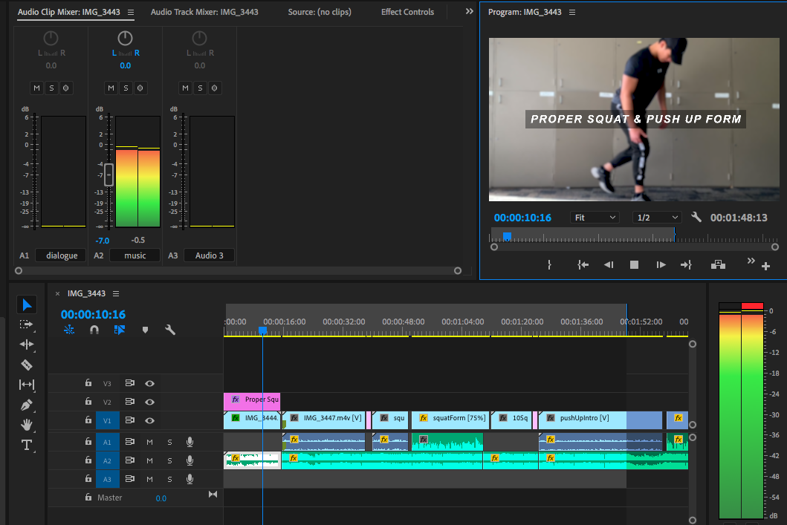
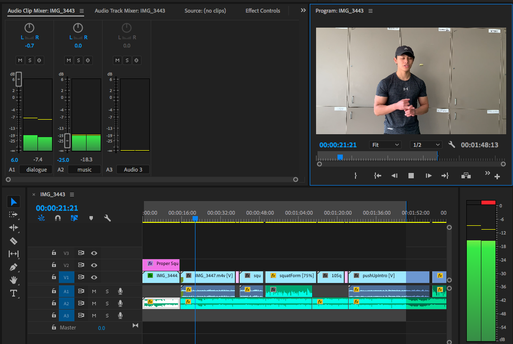
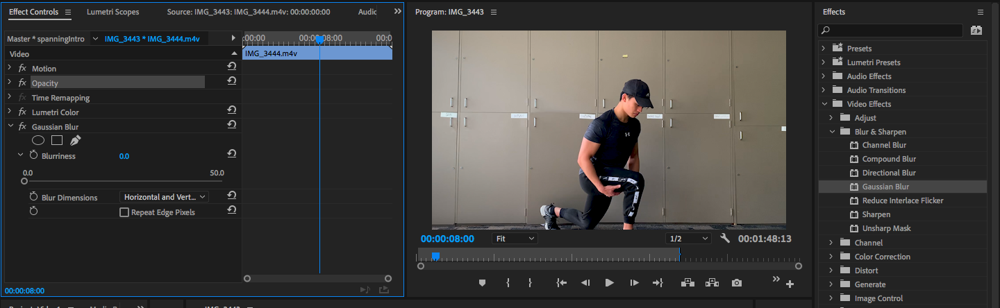
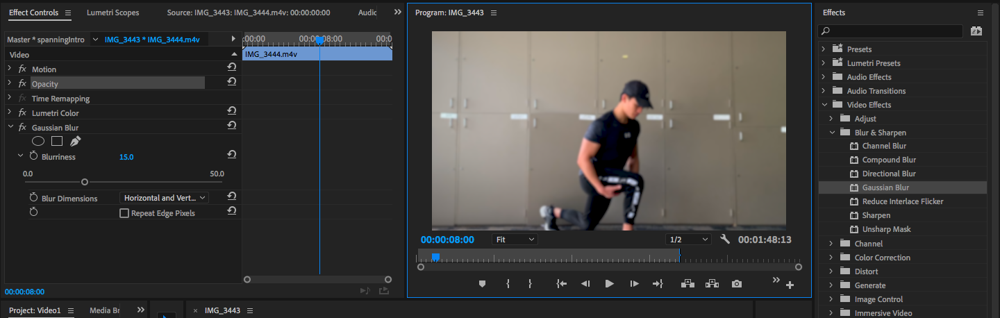
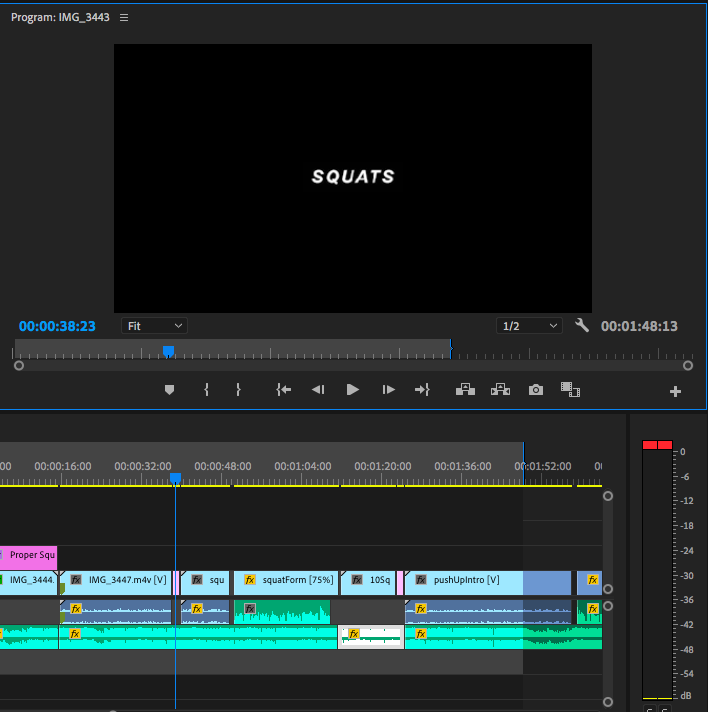
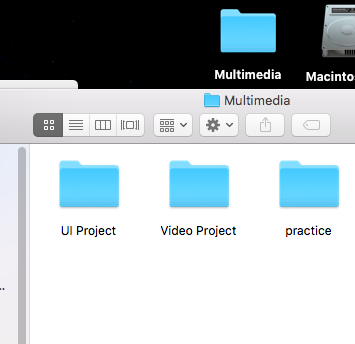
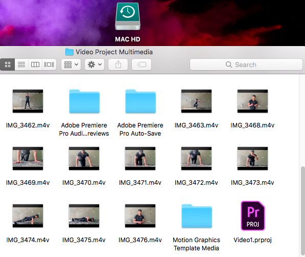

Documentation
Which tools/applications you used and why
As I said earlier, I had a go at using the Adobe Premier Pro for editing my video. I've wanted to use this application because I wanted to learn the industry standard for video making. I've played around the tools that I think will be helpful but the parts that are very helpful to me was definitely the timeline, program monitor and in out points to trim the videos and audio. I used the sound mixer to increase and decrease the volumes of my music and audio because I wanted to have them playing at the same time. I added some effects on my intro video because I had the vision of a blurry scene so all attention will go to the title of the video. I also added some text and cuts for transition effects.

Only music is playing. No audio, so the volume is quite high.

Music and audio are both playing. The audio is actually a bit low so I tried to decrease the music volume lower than the audio so that you can clearly hear what he's saying but still hear the music playing in the background.

This is what the video looked like without the Gaussian blur.

Here, I added the Gaussian blur and put it on 15%.
 I added text on the clip using the type tool.
I added text on the clip using the type tool.

I also placed text inbetween cuts.
Why you believe your use of tools/applications was competent
I believe the use of these tools / applications was competent because I had a little bit of knowledge of filming and editing beforehand. I've done a bit of photography during high school so I had knowledge on how to handle a camera. I did some video projects during that time also. Even though I didn't use the industry standard back then, I still had a bit of knowledge and understanding of what I'm supposed to be doing.
How you exported your work and why you did it that way
I exported my project using the Media Encoder. I had to search up how to export because I don't actually know how to do this as I've never posted a Youtube video before. It took me a few tries but I finally got Youtube to accept it on an mp4 format.
How you managed assets during project work
On my laptop, I made a Multimedia folder which holds folders for each of my projects that I done so far. One of them is a Video Project folder. Within this folder, I put all my screenshots, scripts and any other documentation for my portfolio. All my video clips, voice memos and actual video cut footage is stored on a hard drive just in case my laptop storage runs out.

